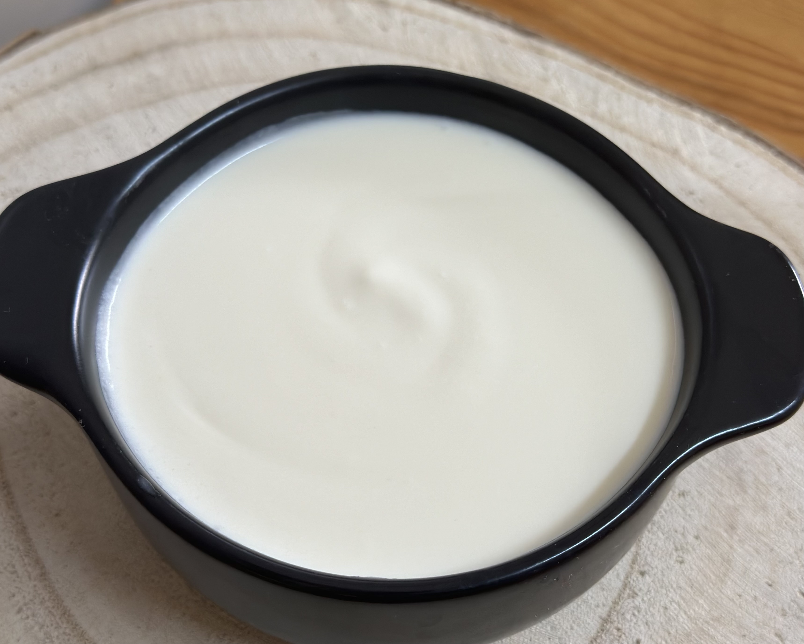

Requeijão

Ingredientes
- 150 g de ricota ou queijo fresco
- 50 g de manteiga em temperatura ambiente
- 100 g de nata
- 1 colher (chá) de amido de milho
- sal QB
Modo de preparo
- Bater no liquidificador todos os ingredientes.
- Levar ao fogo até engrossar.
- Bater novamente no liquidificador.
- Gelar antes de usar e armazenar no frigorífico.
Observação
Durabilidade: 10 dias refrigerado.